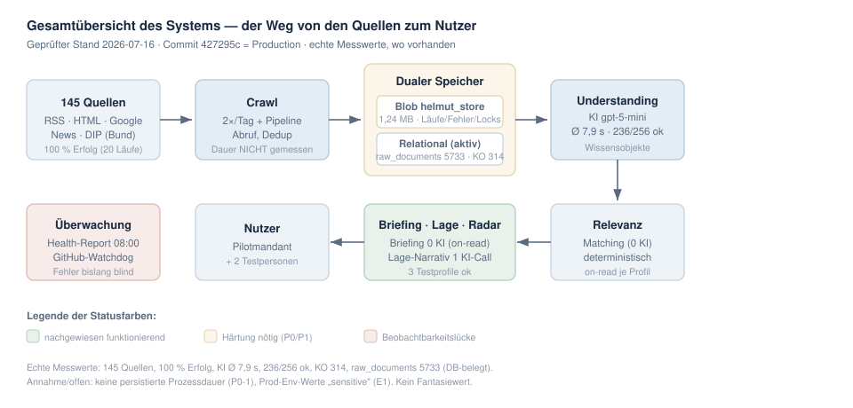
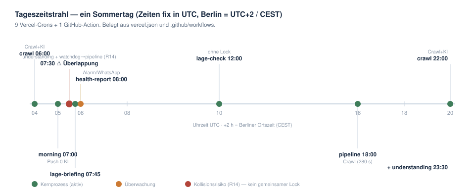
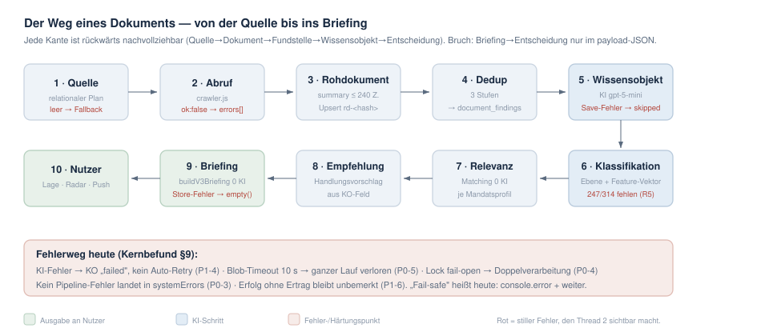
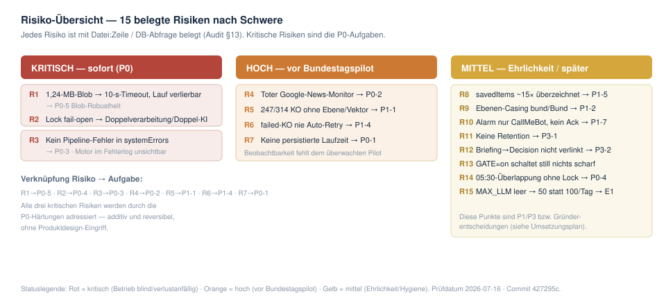
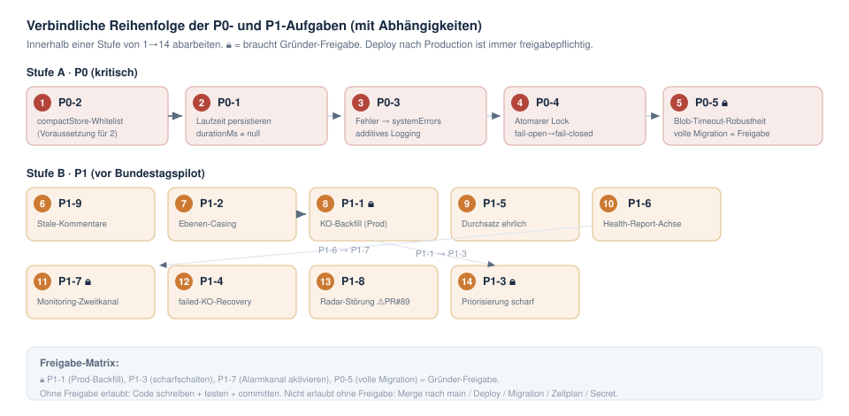
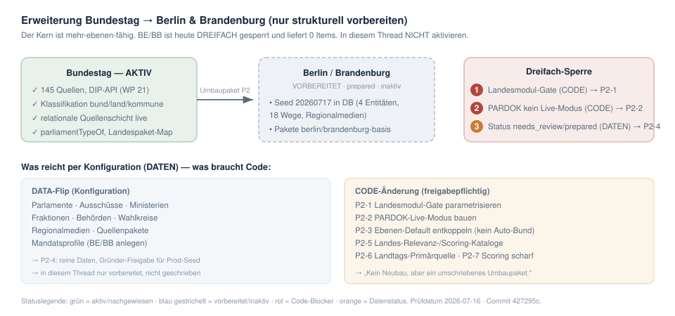

Belastbare technische Wahrheit des Helmut-Datenmotors — geprüft gegen echten Code, Production-Datenbank und Deployment-Stand. Diese Seite ist die visuelle Fassung; die maßgebliche Textfassung sind die PDF- und Markdown-Dokumente.
Statushinweis: Dies ist ein AUDITBERICHT und Umsetzungsplan — die Bestandsaufnahme und der Plan.
Es ist ausdrücklich noch nicht das endgültige Betriebsdokument.
Das endgültige Betriebsdokument entsteht erst nach Umsetzung und Production-Nachweis der P0/P1-Härtungen.
Stand
2026-07-16
Geprüfter Commit
427295c = Production
Umgebung
Vercel fra1 · Supabase eu-west-1
KI-Modell
Azure OpenAI gpt-5-mini
Auditstand
bestätigt aktuell
Kurzfassung
Was nachgewiesen funktioniert — und was nicht
Der fachliche Kern erzeugt nachweislich Vorgänge und Briefings. Für einen überwachten Pilotbetrieb fehlen aber Beobachtbarkeit (Prozesslaufzeiten, Fehler-Persistenz) und zwei Härtungen (Speicher-Robustheit, atomare Sperre). Diese Lücken sind klein, additiv und reversibel — sie bilden die Aufgaben P0 und P1.
✓ Nachgewiesen (echte Messwerte)
Crawl stabil: 145 Quellen, 100 % Erfolg über 20 Läufe, 0 Laufzeitfehler.
Briefing deterministisch (0 KI), funktioniert für alle 3 Testprofile.
Kostenkontrolle aktiv; KI-Kosten seit 01.07. ≈ $0,92.
✗ Noch nicht nachgewiesen
Keine persistierte Laufzeit für Crawl/Pipeline/Lage/Understanding/Briefing.
Kein Pipeline-Fehler landet in systemErrors — Motor im Fehlerlog blind.
Zentrale Production-Env-Werte sind „sensitive" und nicht lesbar (Annahmen).
Einfrier-Status der alten Blob-Kataloge nur datenseitig klärbar.
Bild 1
Gesamtübersicht des Systems
Der Weg von den Quellen bis zum Nutzer in einem Bild: 145 Quellen werden gecrawlt, roh gespeichert (in zwei Speicherwelten), von der KI zu Wissensobjekten verdichtet, je Mandatsprofil auf Relevanz geprüft und schließlich als Briefing, Lage und Radar ausgegeben. Grün = nachgewiesen funktionierend, sandfarben = Härtung nötig, rosa = Beobachtbarkeitslücke.

So liest man es: Pfeile zeigen die Richtung, in die Daten fließen. Der „duale Speicher" in der Mitte ist der Kern vieler Befunde — Betriebsdaten liegen im alten Blob, Inhalte relational.
Neun geplante Prozesse laufen über den Tag verteilt, alle fest in UTC (Weltzeit); Berlin liegt im Sommer zwei Stunden davor. Wichtigster Befund: Um 07:30 (CEST) überlappen der Understanding-Lauf und der vom GitHub-Watchdog ausgelöste Pipeline-Lauf, ohne dass eine gemeinsame Sperre sie trennt (Risiko R14 → Aufgabe P0-4).

So liest man es: Punkte auf der Achse sind Startzeiten. Der rote Punkt markiert das Kollisionsfenster.
Messwert Cron-Zeiten aus vercel.json belegtAnnahme —Prüfdatum 2026-07-16 · Commit 427295c
Bild 3
Der Weg eines Dokuments — und der Fehlerweg
Von der Quelle über Rohdokument, Dedup, Wissensobjekt, Klassifikation und Relevanz bis ins Briefing. Jede Kante ist rückwärts nachvollziehbar — mit einer Bruchstelle: Vom Briefing zurück zur Entscheidung gibt es keine relationale Verknüpfung (nur ein undurchsichtiges JSON-Feld). Der rote Balken unten fasst die stillen Fehler zusammen, die Thread 2 sichtbar macht.

So liest man es: Blaue Kästen sind KI-Schritte, grüne die Ausgabe an den Nutzer, rote Zeilen sind Fehler- bzw. Härtungspunkte.
Messwert 247/314 KO ohne Ebene (DB)Annahme —Prüfdatum 2026-07-16 · Commit 427295c
Bild 4
Risiko-Übersicht — Statusampel
Fünfzehn belegte Risiken, sortiert nach Schwere. Die drei kritischen (rot) werden durch die P0-Härtungen adressiert, die hohen (orange) sind vor dem Bundestagspilot fällig, die mittleren (gelb) betreffen Ehrlichkeit und Hygiene.

So liest man es: Jede Zeile nennt Risiko und die zugeordnete Aufgabe (z. B. R1 → P0-5).
Messwert jedes Risiko mit Datei:Zeile / DB belegtAnnahme —Prüfdatum 2026-07-16 · Commit 427295c
Bild 5
Verbindliche Reihenfolge der P0/P1-Aufgaben
Die Aufgaben werden nicht nach Nummer, sondern nach ihren Abhängigkeiten abgearbeitet (1 bis 14). Das Schloss-Symbol markiert Aufgaben, die eine ausdrückliche Gründer-Freigabe brauchen. Jeder Weg nach Production (Deployment) ist ohnehin freigabepflichtig.

So liest man es: Nummerierte Kreise = Arbeitsreihenfolge; Pfeile = „muss zuerst". 🔒 = Freigabe nötig.
Messwert —Plan Reihenfolge aus Umsetzungsplan/HandoffPrüfdatum 2026-07-16 · Commit 427295c
Bild 6
Erweiterung: Bundestag → Berlin & Brandenburg
Der Kern ist strukturell mehr-ebenen-fähig, aber Berlin und Brandenburg sind heute dreifach gesperrt und liefern noch keine Inhalte. Vieles lässt sich per Konfiguration ergänzen (grün); zwei echte Code-Änderungen und der Ebenen-Default bleiben aber nötig (sandfarben). In diesem Thread wird BE/BB nur strukturell vorbereitet, nicht aktiviert.

So liest man es: Links der aktive Bundestag, in der Mitte die vorbereiteten Länder, rechts die drei Sperren. Unten: was Daten sind (frei ergänzbar) und was Code (freigabepflichtig).
Messwert Seed 20260717 in DB (4 Entitäten, 18 Wege)Annahme —Prüfdatum 2026-07-16 · Commit 427295c
Übersicht
Status aller Systembestandteile
Bestandteil
Status
Beleg / Kennzahl
Crawl (145 Quellen)
aktiv, nachgewiesen
100 % Erfolg, 20 Läufe, 0 Fehler
KI-Verständnis
aktiv, nachgewiesen
Ø 7,9 s, 236/256 ok
Briefing / Lage / Radar
aktiv, nachgewiesen
0 KI, 3 Testprofile
Relationale Quellenschicht
aktiv (Cutover live)
raw_documents 5733, KO 314
Laufzeitmessung
fehlt (P0-1)
durationMs immer null
Fehler-Persistenz
fehlt (P0-3)
recordSystemError nie im Motor
Pipeline-Sperre
fail-open (P0-4)
nicht-atomar, TOCTOU
Zentraler Speicher (Blob)
timeout-anfällig (P0-5)
1,24 MB, 10-s-Timeouts belegt
KO-Anreicherung
247/314 offen (P1-1)
Altbestand nie gebackfillt
Google-News-Monitor
tot (P0-2)
liest gestripptes Feld
Berlin / Brandenburg
vorbereitet, inaktiv (P2)
Seed live, dreifach gesperrt
Fachbegriffe
Legende — jeder Begriff einfach erklärt
Crawler
Programm, das automatisch Webseiten und Feeds abruft und die Inhalte einsammelt.
Geplanter Prozess (Cron)
Aufgabe, die zu festen Uhrzeiten automatisch startet (z. B. „jeden Tag 06:00").
Rohdokument
Ein eingesammeltes Dokument im Ausgangszustand — nur Kurzfassung (≤ 240 Zeichen), noch nicht durch die KI verstanden.
Wissensobjekt (KO)
Ein von der KI verdichteter „Vorgang": zusammengefasst, mit Personen, Themen und politischer Ebene.
Mandatsprofil
Die Einstellungen eines Nutzers (Partei, Ebene, Ausschüsse), nach denen Relevanz bestimmt wird.
Relevanzbewertung
Der Abgleich, wie wichtig ein Wissensobjekt für ein bestimmtes Mandatsprofil ist — deterministisch, ohne KI.
Tenant (Mandant)
Ein abgegrenzter Nutzer-/Kundenbereich; Daten verschiedener Tenants dürfen sich nicht vermischen.
Zeitüberschreitung (Timeout)
Abbruch, wenn ein Vorgang zu lange dauert (hier: 10 Sekunden beim Speichern) — kann Daten kosten.
Wiederholungslogik (Retry)
Automatischer erneuter Versuch nach einem Fehler — begrenzt, damit keine Endlosschleife entsteht.
Regressionstest
Automatischer Test, der prüft, dass Bewährtes nach einer Änderung noch funktioniert.
Production
Das echte Live-System, das die Nutzer verwenden (im Gegensatz zur Testumgebung).
Migration
Geplante Änderung an der Datenbankstruktur oder ein einmaliges Umschreiben von Daten.
Protokoll (Log)
Fortlaufende Aufzeichnung dessen, was das System tut — für Fehlersuche und Nachweis.
API
Definierte Schnittstelle, über die Programme miteinander sprechen (z. B. die Bundestag-DIP-API).
Modellversion
Die konkrete Version des verwendeten KI-Modells (hier: Azure OpenAI gpt-5-mini).